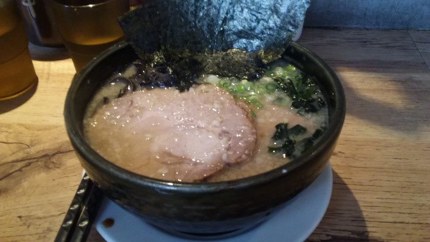
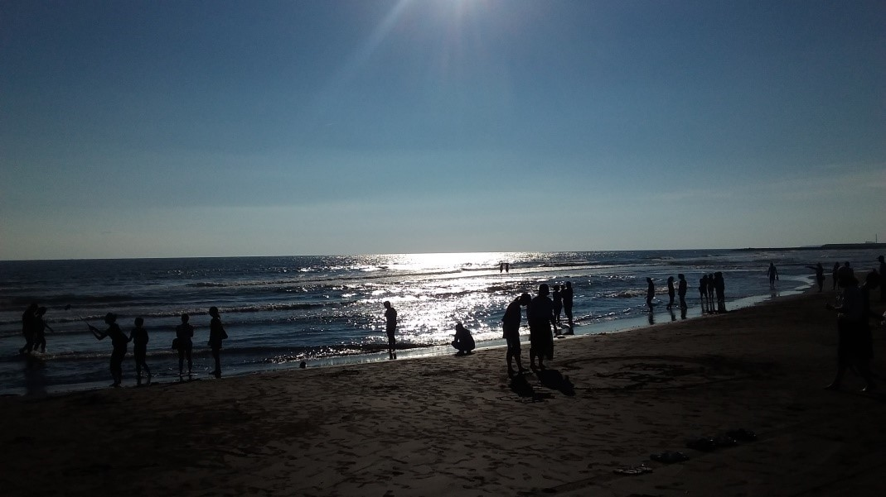
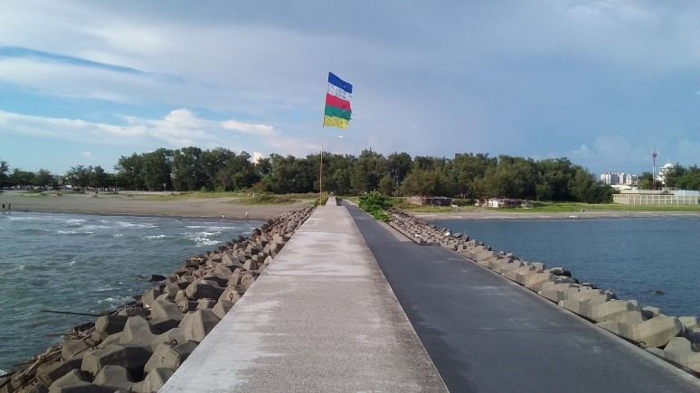
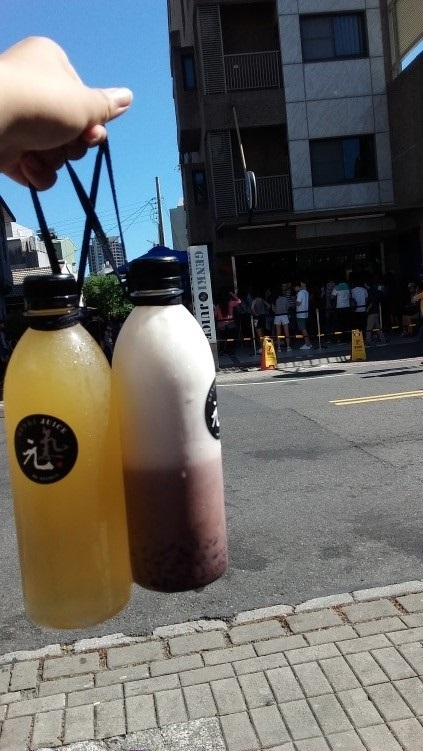

今天一大早決定和朋友去排隊吃這家位在台南市限量的日式拉麵，叫做「八峰亭」。
店內的裝潢是日式的，店內只有10個位置，非常的少，令我訝異；我那天點的是豚骨拉麵，麵的硬度與湯的濃度是能夠調整的，而我想要吃日本的口味，所以我的麵的硬度稍硬，湯的濃度特濃；這間最出名的是肉很大一塊，麵一送來果然如此，肉幾乎和碗一樣大，也很有咬勁，然後湯頭一入口就感受到滿滿的濃郁，而麵的部分，硬度剛好，很符合我的口味，吃一口麵配一口湯再加上一口肉完全不枉費我早起排隊，而且也不貴，這碗只有170元，吃得非常的值得。
八峰亭拉麵 豚骨拉麵 170元
吃完拉麵後，我們決定去安平觀夕平台散個心。當天太陽非常大我和朋友們都被曬得很慘，不過風也很大幾乎都成了瘋婆子，
太陽超大
和朋友們走在堤防上，吹著很強的海風~(堤防超高!!往下看覺得可怕
又順道去排有名的元氣果汁~
